もしもに備える道具
私たちが被害を受けないためには、まずはヒグマに私たちの存在を知らせることが重要です。
また、近距離まで接近してしまった最悪の場合に備えて、撃退できる道具を持つことが有効です。
左側の道具をクリックして、それぞれの使い方を確認してみましょう。
ニュースだけでは見えない、
本当の姿。


あつれき（軋轢） … 人間とヒグマが仲が悪くあい争うこと。

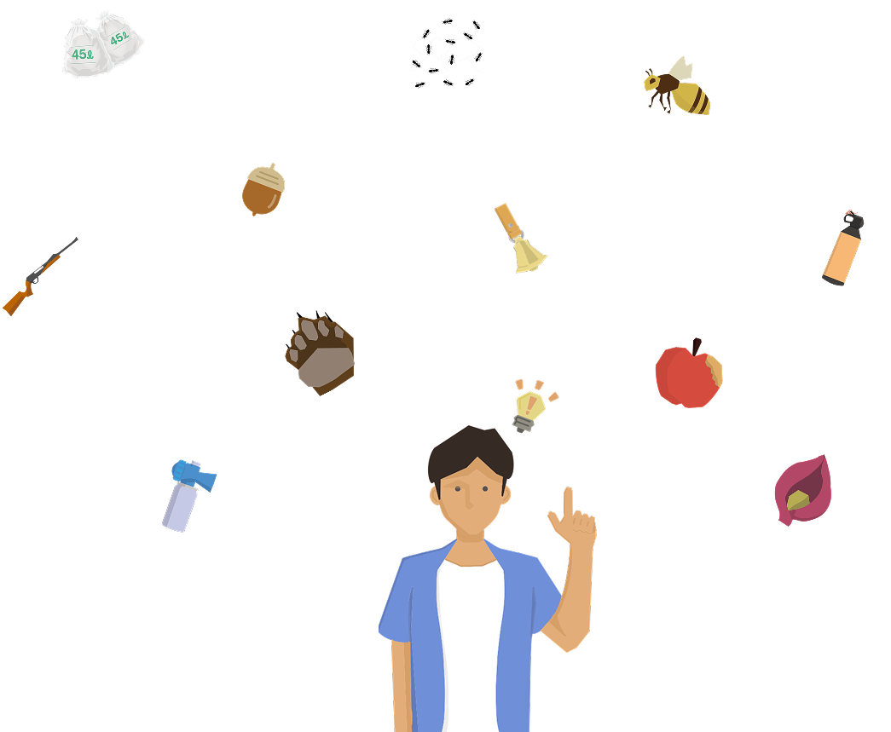
気になる特性を押してみよう
地域個体群
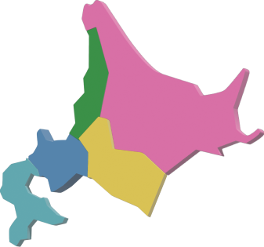
季節の食べ物
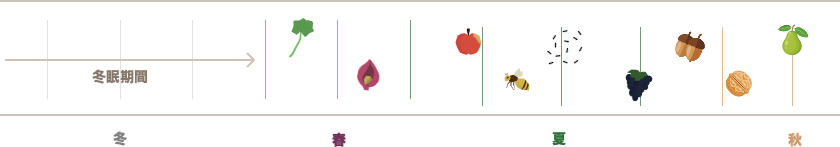
体重
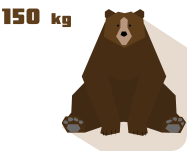
身長
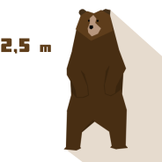
行動範囲
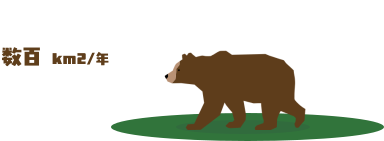
一日の行動
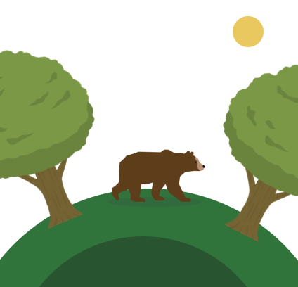
個体数
カロリー
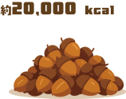
季節別行動
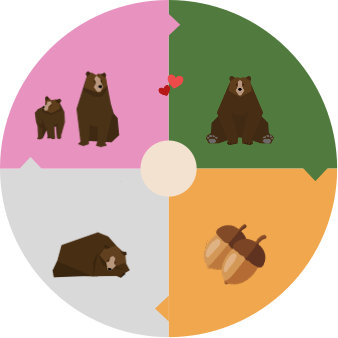
五感
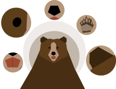
面積が広い北海道では、同じヒグマでも地域によって生息密度や地理的特性・人との関係が異なります。そのため、5つの地域個体群に分かれています。
ヒグマは分類上「食肉目」に属していますが、実際には雑食性の動物です。地域や環境によって食べるものは変化しますが、本来は植物性のエサが大部分を占めています。
季節ごとに手に入りやすい植物が変化するため、季節ごとに食性が大きく異なります。
フキ、ザゼンソウ、ミズバショウ、セリ科などの草本類を主に食べます。越冬できなかったエゾシカの死骸を食べたり、動きの遅い小鹿をを捕食したりもします。
フキやセリ科など草本類も食べますが、アリ、ハチ、サリガニなどの昆虫や甲殻類、キイチゴやヤマグワなどの果実を主に食べます。
夏と秋の境目の時期は、草本類が成長して硬くなり、木の実が実る前の季節です。そのため、食べ物が不足しやすい時期です。
ドングリやクルミなどの堅果類、ヤマブドウやサルナシなど液果類を主に食べます。冬眠に向けて大量の脂肪を蓄えるため多くのカロリーを摂取します。
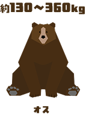
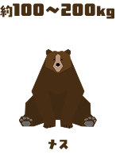
ヒグマは日本で最大の陸上動物です。
通常オスは大きくても300kg台ですが、過去には体重500kgに迫る超大型の個体も確認されています。
ヒグマは冬に一切の飲食や排泄を行わない「冬眠」をします。そのため、秋になるとドングリやサルナシなどを大量に食べ、冬眠に備えて皮下脂肪を蓄えます。体重は春から夏にかけて減少し、秋は急増します。冬の間、蓄えた脂肪を消費して過ごすため、春には大きく体重が減少しています。
肉食（サケなどの魚類や、他の動物の肉）の割合が高い地域ほど、ヒグマは巨大化する傾向にあります。
ヒグマは周囲を警戒したり、威嚇したりする際に後脚で2本足で立ち上がることがあります。 ヒグマが立ち上がった状態の高さは、人間の身長と同じかそれ以上になります。
成獣はこれほど巨大になりますが、冬眠中の穴の中で生まれる生まれたばかりの子グマの体長はわずか20cm〜30cm程度、体重は400gほどしかありません。人間の手のひらに乗るほどの大きさから、2~3年で体長は130cm~160cm、体重は70kg~120kg（オスの場合）に成長します。
人間も成長期がありますが、ヒグマも最大の体長に達するまでにはかなりの時間を要します。 メスはだいたい4〜6歳頃で体の成長が止まりますが、オスは8歳から10歳頃まで数年かけてじわじわと体が大きくなり続けます。そのため、群を抜いて巨大な体長を持つオスは、厳しい自然界を長年生き抜いてきた「ベテランの高齢グマ」であることがほとんどです。
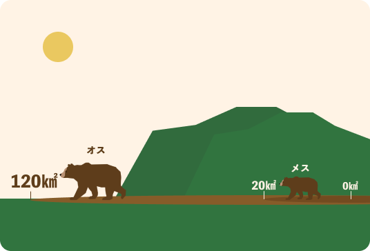
行動圏の広さは、オスが数百㎢、メスが数十㎢と、オスの方がメスよりも広いことが分かっています。オスは、繁殖のためにメスを探して歩き回るため、行動圏が広くなります。行動圏の広さは、地域や餌資源の量によっても変わり、餌資源が多い地域では、行動圏は狭くなります。また、ヒグマには、「なわばり（他の個体の侵入を許さない範囲）」はなく、行動圏も他の個体と重複しています。
山の中に住むヒグマは基本的に昼行性で、早朝や夕方に比較的活発になります。人間と同じように、昼間は活動して夜間は睡眠する生活をしています。ただし、人里の近くでは、人間に見つからないために姿を隠して夜間に行動することが多いです。
背擦りは、樹皮を剥ぐ、噛む、体を擦りつける等の行動で、繁殖期の5〜7月に活発化し6月にピークを迎えます。目的は個体間のコミュニケーションと考えられ、特にオスによる利用頻度が高いのが特徴です。トドマツ等の太い針葉樹が、獣道や林道沿いで選択的に利用されます。
ヒグマはシカの死体など一度に食べきれない大きな餌を手に入れると、土や木の枝葉などの周りにある物をかぶせて隠し、しばらくその場に居座ります。これは、土饅頭と呼ばれます。土饅頭に近づくと、餌を守るためにクマが攻撃してくることがあります。シカの死体の近くにはクマが潜んでいる可能性があるので、絶対に近づかないようにしましょう。
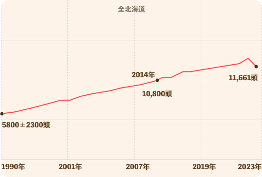
1990年時点での生息数5800±2300頭と比較すると、約30年間で倍増していることになります。生息数は1990年代から2022年まで単調に増加しており、2023年は駆除数増加の影響で多少の減少がありました。
クマの摂食量は、年齢や性別、体格によって大きく異なります。オスの成獣の場合、1日に約13kgもの食物を数回に分けて平らげます。季節による変動も顕著で、冬ごもりを控えた秋は特に大量に摂取します。
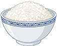
１日の食事のペースは、朝と昼に大量に食べ、夕方は少なめに済ませるのが一般的なサイクルだそうです。性別による食事量の差も大きく、メスが1日10〜15kgほどであるのに対し、オスは多い時で1日24kgもの食物を胃袋に収めます。
ヒグマは目や耳は小さいですが、鼻は長く突き出しています。ヒグマの嗅覚はとても発達しており、犬の６倍ともいわれる嗅覚を持っています。数百メートル離れた食物のにおいや、土に埋まった食物のにおいも嗅ぎつけます。ヒグマは「におい」に頼って生活しています。
オスがメスを求めて広範囲を動き回ります。オスの成獣は自らの子孫を残すため、血の繋がりのない子グマを殺してしまう習性があります。そのため、子連れの母グマは子を守るため、山林部を避けて生活することがあります。
草本類を主食としていたヒグマが木の実を中心に利用するまでの間の時期で、森林内の食べ物が少なくなります。この時期から川ではサケのそじょうが始まりますが、サケがそじょうするエリアは知床半島など、ごく一部です。食べ物を探して行動エリアを変えるため、人目につきやすい時期です。農地には栄養価の高い農作物が豊富にあるため、一年で最も農業被害が多い時期です。
冬眠に備えてたくさん食べ物を食べて栄養を蓄えます。ドングリやクルミなどの堅果類が豊富に実るため通常であれば食べ物に困ることはありませんが、それらが不作になると行動エリアを広げて、広範囲を移動します。
十分に栄養を蓄えたヒグマは冬眠穴で冬眠します。ヒグマの冬眠穴は、「樹木の根を利用してその下に掘り込むタイプ」と「そのままの地面に掘る土穴タイプ」に分けられます。また、自然の穴を利用するものは岩穴と樹洞に分けることができる。妊娠したメスは冬眠中に出産し、春まで冬眠穴で子育てをします。
ヒグマは目や耳は小さいですが、鼻は長く突き出しています。ヒグマの嗅覚はとても発達しており、犬の６倍ともいわれる嗅覚を持っています。数百メートル離れた食物のにおいや、土に埋まった食物のにおいも嗅ぎつけます。ヒグマは「におい」に頼って生活しています。
非常に優れ、音に対しては大変敏感です。ヒグマは聴覚が優れており、特に80～120ヘルツ程度の低周波の音や、130デシベル程度の突発的な大きい音を強く警戒する習性が知られています。人間の足音や話し声に対しても敏感に反応し、近くに人の気配を感じるとその場を離れる場合が少なくありません。
ヒグマの視覚は人間より劣るとされ、遠くの静止物は苦手ですが、夜間や薄暗い環境でも活動できる「夜目」が効き、動きには敏感です。嗅覚・聴覚に比べると弱いものの、日中から夜間まで行動可能で、特に早朝・夕方は活動が活発になるため注意が必要です。
ドングリやザゼンソウだけでなく、人間と同じように山菜や果物、農作物を美味しいと感じます。大きな犬歯を持つが、食べ物は植物質中心のため、大臼歯は食べ物をすりつぶすのに適した形状になっています。
ヒグマの触覚で重要なのは、口元や目の周りにある感覚毛（ひげ）です。これらは暗闇や茂みで周囲の状況を把握するセンサーの役割を果たします。また、敏感な鼻先や足裏を通じて、獲物や地形の微細な振動を察知します。
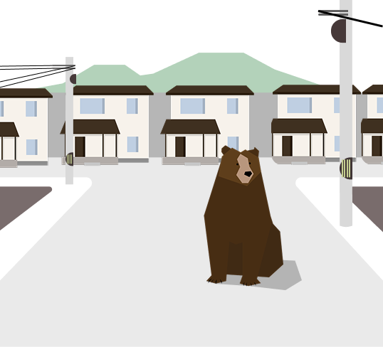
晩夏はもともとエサが不足しやすい季節でヒグマがエサを探し回る範囲を広げて市街地に出没しやすい季節です。
時間をかけて徐々に定住していったメスグマや独り立ちのために遠くへ移動している最中に市街地に出てしまった若ぐまが出没しやすいです。
生ごみやコンポスター、畑などに捨てられた規格外の農作物など人為的な誘因物がヒグマに魅力的な場所だと学習させてしまったことも出没の要因の一つです。
森林近くの果樹園や農地にはヒグマが利用できるエサがたくさんあります。
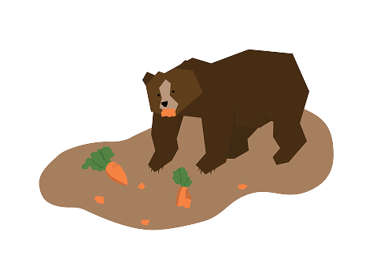
農地周辺は「アトラクティブ・シンク（魅力的な罠）」と化しており、駆除で空いた場所に中心部から新個体が次々流入する負の連鎖が生じています。
箱わなによる無差別な駆除は、危険性の学習を妨げ、さらなる流入を招く可能性も指摘されています。
農家の減少や大規模機械化で人の気配が薄れ、地域の「守備力」が低下したことも、繰り返し出没を許す要因となっています。
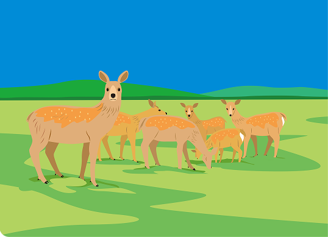
エゾシカの生息数増加とヒグマによるエゾシカの新生児採食割合は比例しています。
エゾシカ侵入防止柵や狩猟数の増加によるエゾシカの死体の増加もヒグマの食性に影響しています。
エゾシカの増加がヒグマの生存率・繁殖率・成長率にプラスを及ぼした可能性が指摘されています。
エゾシカなどの草食獣による林床植生や樹木への影響林床植生のバイオマスの減少・構成種の変化がヒグマの森林でのエサ不足に影響しています。
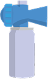
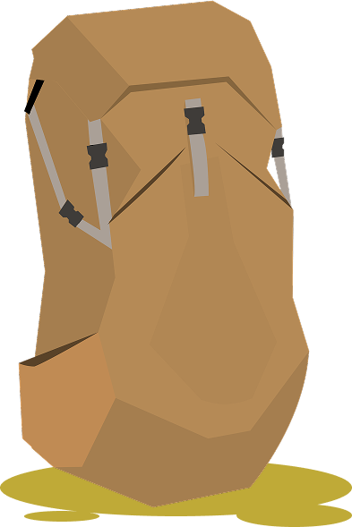
気になる道具を押してみよう
私たちが被害を受けないためには、まずはヒグマに私たちの存在を知らせることが重要です。
また、近距離まで接近してしまった最悪の場合に備えて、撃退できる道具を持つことが有効です。
左側の道具をクリックして、それぞれの使い方を確認してみましょう。
ヒグマに襲われた時、クマにスプレーを吹きかけ、その攻撃から身を守る道具です。北米では、90％以上の確率でヒグマ攻撃を止めた効果があります。
成分は主にカプサイシン（唐辛子エキス）です。クマの目、鼻、口の粘膜に強烈な刺激を与えることで、一時的に視力と呼吸機能を奪い、その隙に逃げるための道具です。
ヒグマに襲われた時、クマにスプレーを吹きかけ、その攻撃から身を守る道具です。北米では、90％以上の確率でヒグマ攻撃を止めた効果があります。
成分は主にカプサイシン（唐辛子エキス）です。クマの目、鼻、口の粘膜に強烈な刺激を与えることで、一時的に視力と呼吸機能を奪い、その隙に逃げるための道具です。
ベアホーンは、ガスや手動の力で強烈な高周波音を出し、クマにこちらの存在を知らせたり、驚かせて遠ざけたりするための道具です。
風の強い日や川の近くなど、音が消されやすい場所で有効です。
人の話し声などを流すことで、ヒグマに警戒させます。
周囲に人がいることをアピールするのに役立ちます。
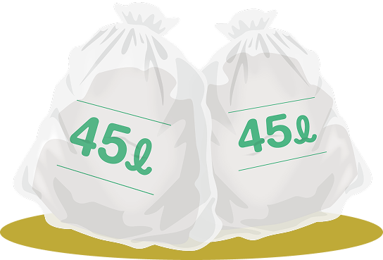
熊は嗅覚が鋭く、一度ごみの味を覚えると、同じ場所に何度も出没する習性があります。ごみを正しく出すだけで、熊の出没を減らし、地域の安全を守ることができます。
ごみは必ず袋や容器で封をし、匂いが漏れないようにしましょう。また、しっかり密閉することで、熊がごみの場所を覚えるのを防げます。
家庭や農地で出るメロンなどの作物の残渣も放置せず適切に処理してください。
熊は夜行性のため、夜にごみを出すと出没リスクが高まります。
現在、ヒグマの出没状況をまとめた道庁サイトや、皆で出没・痕跡情報を共有・投稿できる『ヒグマップ』といった情報源があります。
お出かけ前には市町村や警察署の情報も含めて確認し危険な場所への立ち入りを避け、もしヒグマや痕跡を発見した場合はヒグマップ等への通報にご協力をお願いします。
北海道庁ウェブサイト
(https://www.pref.hokkaido.lg.jp/ks/
skn/higuma/207234.html)
ヒグマップ
(https://higumap.info/login?principal=anonymousUser)
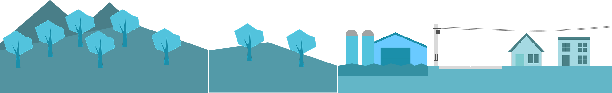
一つの島の中で、ヒグマと人間はそれぞれ異なる環境を求めています。 生態系に大きな影響を及ぼす両者が、永続的に共存するために必要な対策は何でしょうか。
ヒグマの調査研究を発展させ、「種の保全」と「問題個体の駆除」を両立した適切な管理体制を築くことが不可欠です。 その上で、ヒグマに人間の食べ物を与えない環境づくりと、それらがなくても生存できる自然環境の整備を並行して進める必要があります。
北海道は令和4年に「北海道ヒグマ管理計画（第2期）」を発表しました。 地域個体群の存続を図りつつ、ICT等の最新技術や科学的知見を柔軟に活用し、出没抑制から発生時の対応まで、 総合的なあつれき低減策を一層強化することを目的としています。
日本政府は、令和7年に「クマ被害対策パッケージ」を発表しました。 クマによる死者数が過去最多を更新し、人身被害が増大・多様化・広域化する深刻な事態に対処するためです。 国民の命と暮らしを守るべく、関係省庁が連携して実効性の高い対策を段階的に実行します。
国や北海道はこれらの取り組みを通して、北海道におけるヒグマの種の保全と被害の最小化の両立を目指しています。
このページでは載せ切れないヒグマについての詳しい情報を詳しく解説します。
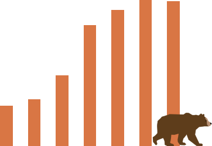
私たちの暮らしのすぐそばに生息するヒグマ。近年、目撃情報や出没件数の増加がニュースを賑わせていますが、実際のところ何が起きているのでしょうか。
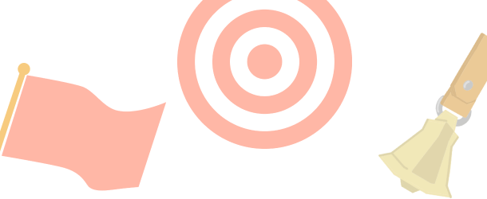
被害増加を受けて見直される「北海道ヒグマ管理計画」。 北海道が目指すこれからのヒグマ対策を分かりやすく紐解きます。